kernelport
Bring CUDA-only kernels to Mac, AMD, browsers and CPU, with proof they are correct. Your coding agent writes the ports; kernelport runs each one on real hardware and checks it against a reference that was itself validated against the original CUDA kernel.
pip install kernelport
It catches real bugs
Checking the original CUDA code is part of the process, and it pays off. On Karpathy's
llm.c, validation showed that softmax_forward_online_kernel8
leaves whole rows of its output unwritten when a row is shorter than the thread block. A reviewer then spotted
the same pattern in a second kernel, one that passes every runtime test on today's NVIDIA GPUs.
Both fixes are in karpathy/llm.c#867, and kernelport
now warns about that pattern before anything runs.
What it looks like

Backends
- Triton (NVIDIA, AMD): verified on an RTX 5060
- Metal via MLX (Apple Silicon): verified on Apple M1 in CI on every push
- WebGPU (WGSL, any GPU and browsers): verified on NVIDIA, Apple, Intel and software adapters
- CPU via Numba: verified
- HIP (AMD): ports written, not yet run on AMD hardware
A port is reported as PASS only if its current code ran on real hardware and matched.